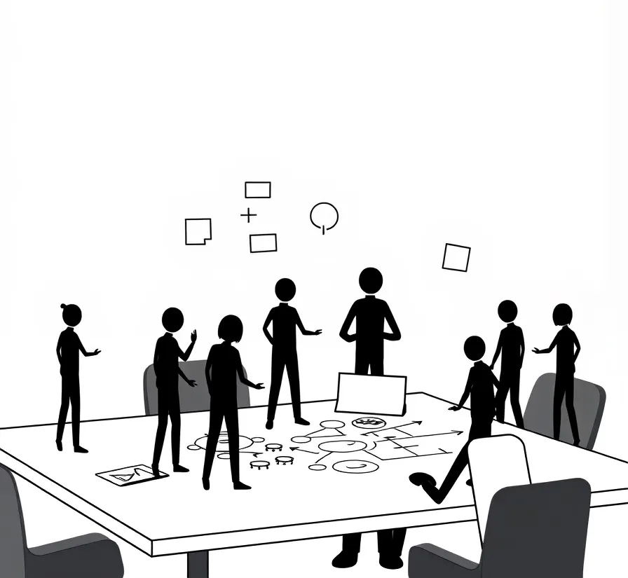

As an engineer, you have the power to shape the products that touch millions of lives.
But to truly make a difference, you need to go beyond just writing elegant code that nobody will see. You need to develop a deep understanding of the product itself and the business goals it aims to achieve.
In other words, you need to become a product-minded engineer.
👨💻The Traditional Engineer's Role
The Traditional Engineer is focused only if the code/tech that they implement is elegant and it works.
On the other side, you have a product manager or a product team that handles all the other stuff that they (the traditional engineer) don't want to worry about. New ideas for features, customer feedback, strategies for the product, and so on. Basically, the long-term vision of a product.
But there's a thing that we must understand. People, your end customers, don't care about code or what tech stack is implemented. They don't care if you managed to reduce the response time of a website by 0.5s.
They just want things to work. That's it. Nothing else.
And things must work. Because if they don't, you will have angry customers.
🧠What Does It Mean to be Product-Minded?
Being product-minded means having a keen interest in the "why" behind the product. It's about understanding the users, the market, and the business objectives.
When you're product-minded, you don't just focus on the technical aspects. You actively contribute to shaping the product's strategy. You shape what customers use.
As a product-minded engineer, you:
Sync your work with the company's broader goals
Prioritize user feedback and strive to build products that solve real problems
Collaborate effectively with cross-functional teams, including product managers and designers.
🌟Why Your Product Mindset Matters
In today's competitive landscape, having a product mindset is no longer optional - it's a must. Just like building a personal brand.
You innovate and become more efficient
When you understand the product and business context, you identify opportunities to leverage technology in creative ways.
You suggest alternative approaches that balance technical feasibility with product impact, driving innovation and efficiency.
You start to think out of the box.
Your team's confidence will improve.
Product-minded engineers often become key contributors and the go-to people for product managers.
You offer ideas, you see blockers in the future, you consider tradeoffs, and much more. This will make your team one of the most valuable and have the most impact on the product.
Making your team valuable will make them feel less like imposters.
Open new doors
Developing a strong product mindset can open up new career opportunities.
You'll be sought out by managers for your valuable insights and overall thinking outside the box. You have a wider vision of everything. You can connect dots that most people do not see.
This will make you valuable. You see things that others don't.
🌿Cultivating Your Product Mindset
So, how can you create a mind that thinks outside the box?
Be curious about the business: Understand your company's business model, target users, and competitive landscape. Engage with users. Ask for the long-term vision of your company. If you like it, get on board with it.
Build relationships with product teams: Collaborate more with product managers and designers. Participate in product discussions and offer feedback. If you think a new feature would be a nice addition, just spell it out.
Learn about data and metrics: Learn about user behavior and business metrics. This can be boring, but data is data. And data can be your friend.
Think beyond the code: Consider the end-to-end user experience. Don't ignore it completely. But from now on, the code/tech stack can become a second priority.
Continuously learning : Treat each project as an opportunity to improve your product understanding. Seek feedback from your manager on how you can improve your product skills.
Practical Tips:
📚 Read product-focused books: "The Lean Startup" by Eric Ries is a good one.
📰 Subscribe to newsletters: Stay up-to-date on product trends and best practices.
🛠️ Practice product exercises: Pick a product and apply:
Customer Empathy Mapping
Product SWOT Analysis
Feature Prioritization
🧗♀️ Overcoming Challenges
You will not become a product-minded engineer the next day. It takes time. Especially if you work in an organization that isn't product-focused.
You may encounter resistance or lack clear incentives for taking on additional responsibilities. And budgets and other stuff overlap with the need to make a good product.
Start small by building your product knowledge and collaborating closely with your product team.
Over time, you can show the value of a product mindset and maybe even shift your company's culture.
🎯 Code with a Purpose
I'm not saying you should become a Product Manager. No, that's no it.
I just want everyone to think about the customer in the end. The product. Because this is what people will use. This is what people will interact with.
By understanding the product, the users, and the business, you can make a real impact and accelerate your career growth.
You can design the most beautiful code ever written to create a calculator.
But if 1+1 = 3, then you created nothing.
Until Next Time 😎
Got thoughts? Questions? Just want to say hi? I'm all ears! You can find me on the professional network (LinkedIn) or the digital playground (X).
I'm always up for a chat and promise to get back to everyone. After all, the best part of writing is the conversations it starts.